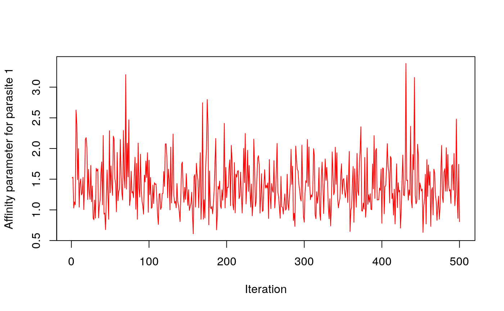
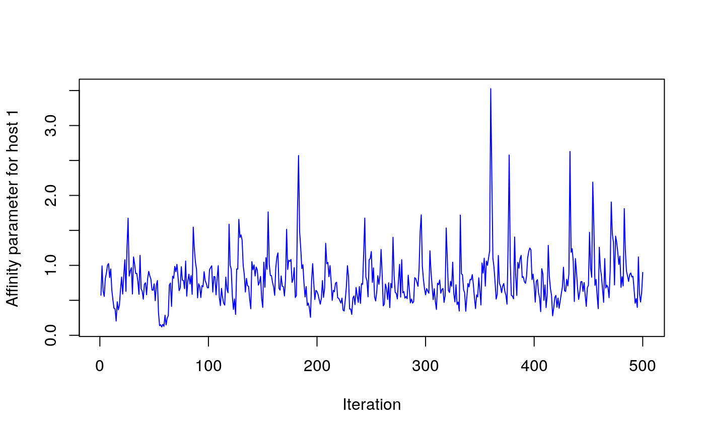
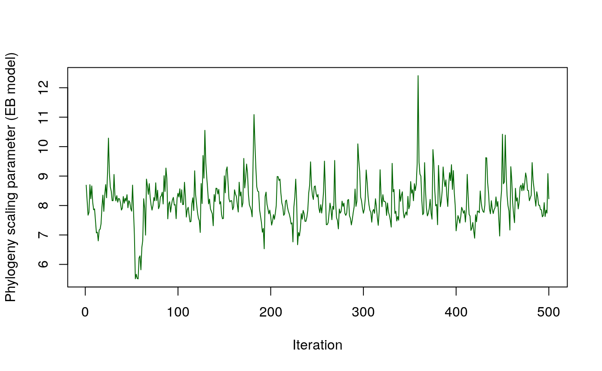
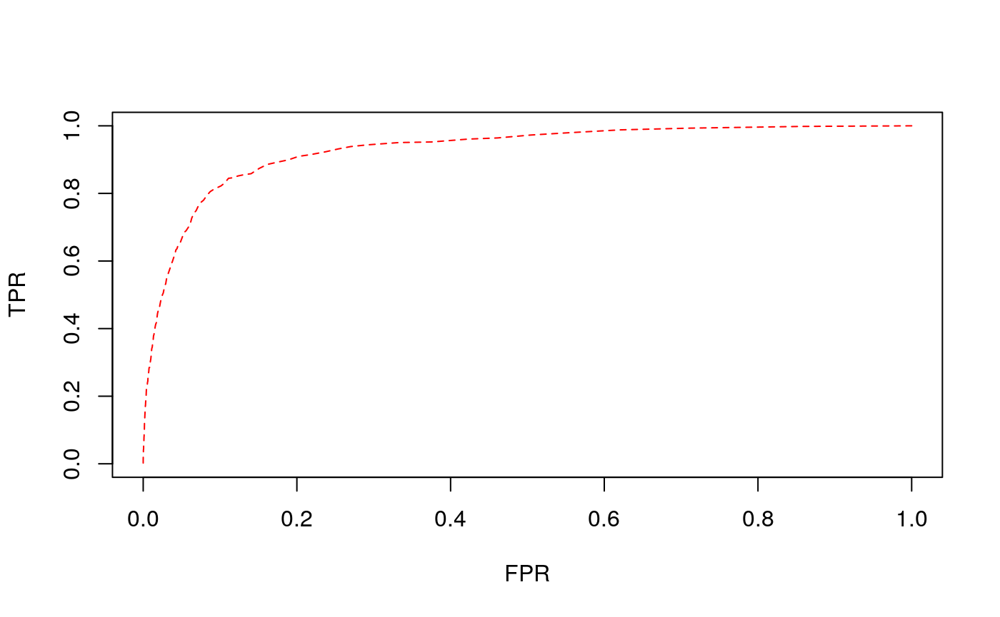
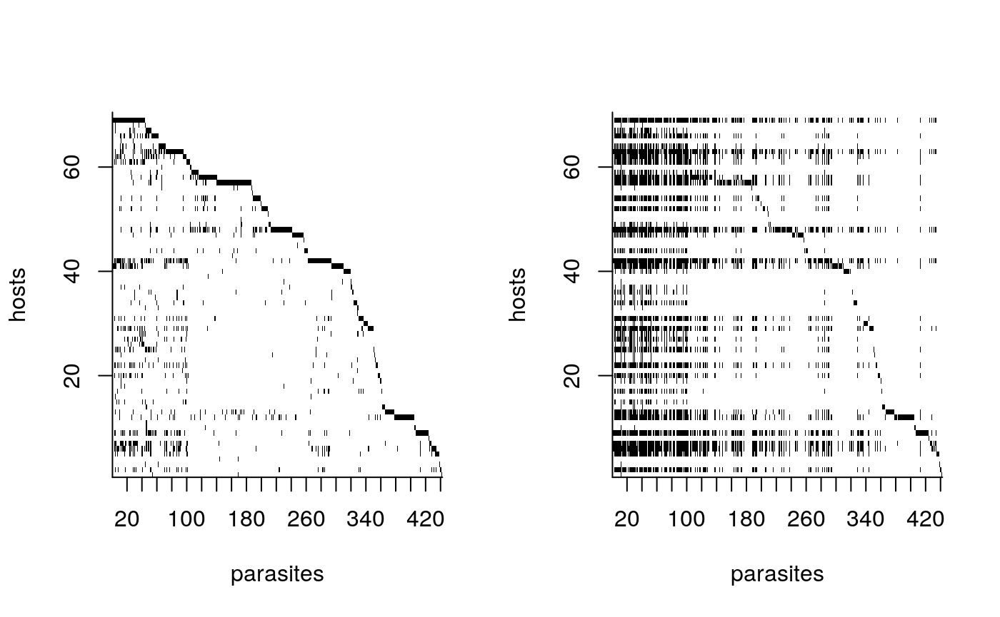
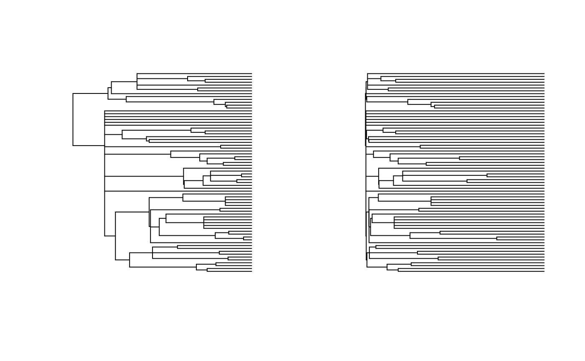

Elmasri et al. Host-Parasite Link Prediction Vignette
Maxwell J. Farrell & Mohamad Elmasri
April 18 2020
Source:tests/vignettes/HP-vignette.Rmd
HP-vignette.RmdPackages
require(ape)
# Source package files
sourceDir <- function(path, trace = TRUE, ...) {
for (nm in list.files(path, pattern = "\\.[RrSsQq]$")) {
if(trace) cat(nm,":")
source(file.path(path, nm), ...)
if(trace) cat("\n")
}
}
sourceDir("../R/")## ana.table.R :
## arrange.tree.R :
## cross.validate.fold.R :
## cross.validate.set.R :
## EB.distance.R :
## eb.phylo.R :
## fullJoint_est.R :
## get.max.depth.R :
## heights.phylo.R :
## ICM_est_over_acc.R :
## ICM_est.R :
## lof.R :
## lower.tri.Index.R :
## network_clean.R :
## network_est.R :
## plot_degree.R :
## plot_Z.R :
## raffinity.MH.R :
## rEta.cophenetic.R :
## rEta.EB.local.R :
## rEta.over.acc.R :
## rExp.R :
## rExp2.R :
## rg.R :
## rocCurves.R :
## row_extract.R :
## sample_parameter.R :
## topPairs.R :
## topUndoc.R :
## upper.tri.Index.R :Data
To begin we will use a subsection of the GMPD 2.0 and the associated Mammal supertree updated by Fritz et al. 2009
dat <- read.csv("data/GMPD_main.csv", as.is=TRUE, encoding = "UTF-8")
# Removing parasites not reported to species
dat <- dat[grep("sp[.]",dat$ParasiteCorrectedName, invert=TRUE),]
dat <- dat[grep("not identified",dat$ParasiteCorrectedName, invert=TRUE),]
# Subsetting host family Bovidae
dat <- dat[dat$HostFamily=="Bovidae",]
# Formatting host names to match phylogeny
dat$HostCorrectedName <- gsub(" ","_", dat$HostCorrectedName)
# Creating binary interaction matrix
com <- table(dat$HostCorrectedName, dat$ParasiteCorrectedName)
com[com>1] <- 1
com <- as.matrix(unclass(com), nrow=nrow(com), ncol=ncol(com))
# loading phylogeny and pruning to hosts in the interaction matrix
tree <- read.tree("data/mammal_supertree.tre")
tree <- drop.tip(tree, tree$tip.label[!tree$tip.label%in%rownames(com)])
# merge the tree and interaction matrix
cleaned <- network_clean(com, tree, 'full')## Loading required package: geiger## Loading required package: phangorn## Loading required package: Matrix## Warning: not all rows in Z exist tree; missing are removed from Z!## [1] "ordering the rows of Z to match tree..."
## [1] "normalizing tree edges by the maximum pairwise distance!"Plotting Input Data
To visualize the structure of the input interaction matrix we can use two built-in plotting functions.

We can also use the function lof to left order the interaction matrix before plotting:

Another interesting property of networks to explore is the degree distribution. We can look at the degree distribution for both hosts and parasites with the following function:

Running the model
Running for 1500 slices (iterations) on a Dell XPS 13-9350 laptop with i7-6560U and 16GB RAM took about 25 seconds.
## [1] "Z has empty columns - these have been removed!"
## [1] "Running full model..."
## [1] "Run for 1000 slices with 500 burn-ins"
## [1] "Matrix dimension: 70 x 442"
## [1] "slice: 200, at 2020-04-18 17:06:53"
## [1] "slice: 400, at 2020-04-18 17:06:57"
## [1] "slice: 600, at 2020-04-18 17:07:02"
## [1] "slice: 800, at 2020-04-18 17:07:06"
## [1] "slice: 1000, at 2020-04-18 17:07:10"
## [1] "Done!"## List of 3
## $ param:List of 6
## ..$ w : num [1:442, 1:500] 1.52 1.27 1.78 2.69 1.36 ...
## ..$ y : num [1:70, 1:500] 0.573 17.626 2.057 4.803 8.856 ...
## ..$ eta : num [1:500] 8.69 8.16 7.67 7.77 8.71 ...
## ..$ g : NULL
## ..$ burn.in: num 500
## ..$ sd :List of 3
## .. ..$ w : num [1:442] 1.98 1.98 2.13 2.06 2.12 ...
## .. ..$ y : num [1:70] 1.09 5.66 1.88 2.69 4.09 ...
## .. ..$ eta: num 0.715
## $ Z : num [1:70, 1:442] 0 0 0 0 0 0 0 0 0 0 ...
## ..- attr(*, "dimnames")=List of 2
## .. ..$ : chr [1:70] "Addax_nasomaculatus" "Oryx_gazella" "Hippotragus_equinus" "Hippotragus_niger" ...
## .. ..$ : chr [1:442] "Acinetobacter lwoffii" "Actinobacillus actinomycetemcomitans" "Africanostrongylus buceros" "Agriostomum cursoni" ...
## $ tree :List of 4
## ..$ edge : int [1:118, 1:2] 71 72 73 74 75 76 76 75 77 77 ...
## ..$ edge.length: num [1:118] 0.1774 0.0604 0.0792 0.3736 0.0604 ...
## ..$ Nnode : int 49
## ..$ tip.label : chr [1:70] "Addax_nasomaculatus" "Oryx_gazella" "Hippotragus_equinus" "Hippotragus_niger" ...
## ..- attr(*, "class")= chr "phylo"
## ..- attr(*, "order")= chr "cladewise"Example traceplots
# Affinity parameter of parasite 1
plot(out$param$w[1,],type="l", col=2, ylab="Affinity parameter for parasite 1", xlab="Iteration")
# Affinity parameter of host 1
plot(out$param$y[1,],type="l", col=4, ylab="Affinity parameter for host 1", xlab="Iteration")
# Phylogeny scaling parameter
plot(out$param$eta, type="l",col="darkgreen", ylab="Phylogeny scaling parameter (EB model)", xlab="Iteration")
Identfying top predicted links with no documentation
## Loading required package: reshape2## Host Parasite
## Rupicapra_rupicapra Rhipicephalus evertsi
## Aepyceros_melampus Toxoplasma gondii
## Aepyceros_melampus Teladorsagia circumcincta
## Rupicapra_rupicapra Trichostrongylus falculatus
## Aepyceros_melampus Nematodirus spathiger
## Rupicapra_rupicapra Pestivirus Bovine viral diarrhea virus 1
## Rupicapra_rupicapra Bacillus anthracis
## Tragelaphus_strepsiceros Trichostrongylus axei
## Tragelaphus_strepsiceros Trichostrongylus colubriformis
## Rupicapra_rupicapra Impalaia tuberculata
## p(interaction)
## 0.4990482
## 0.4965434
## 0.4751385
## 0.4683420
## 0.4662240
## 0.4661512
## 0.4617623
## 0.4389272
## 0.4306630
## 0.4300992General approach to running the model with 5-fold cross validation
## General variables
MODEL = 'full' # full, distance or affinity
SLICE = 1000 # no of iterations
NO.CORES = 3 # maximum cores to use
COUNT = TRUE # TRUE = count data, FALSE = year of first pub.
ALPHA.ROWS = 0.3 # hyperparameter for prior over rows affinity, effective under affinity and full models only
ALPHA.COLS = 0.3 # hyperparameter for prior over columns affinity, effective under affinity and full models only
## Loading required packages
require(parallel)## Loading required package: parallel## [1] "Z has empty columns - these have been removed!"com <- cleaned$Z # cleaned binary interaction matrix
tree <- cleaned$tree # cleaned tree
## indexing 5-folds of interactions
folds <- cross.validate.fold(com, n= 5, min.per.col=2) ## [1] "Actual cross-validation rate is 0.095"
## [2] "Actual cross-validation rate is 0.095"
## [3] "Actual cross-validation rate is 0.095"
## [4] "Actual cross-validation rate is 0.095"
## [5] "Actual cross-validation rate is 0.096"# returns a matrix of 3 columns (row, col, group), (row, col) correspond to Z, group to the CV group
tot.gr <- length(unique(folds[,'gr'])) # total number of CV groups
## A loop to run over all CV groups
res <- mclapply(1:tot.gr, function(x, folds, Z, tree, slice, model.type, ALPHA.ROWS, ALPHA.COLS){
## Analysis for a single fold
Z.train = Z
Z.train[folds[which(folds[,'gr']==x),c('row', 'col')]]<-0
## running the model of interest
obj = network_est(Z.train, slices=slice, tree=tree, model.type=model.type,
a_y = ALPHA.ROWS, a_w = ALPHA.COLS)
P = sample_parameter(obj$param, model.type, Z.train, tree)
Eta = if(is.null(obj$param$eta)) 0 else mean(obj$param$eta)
## order the rows in Z.test as in Z.train
roc = rocCurves(Z, Z.train, P, plot=FALSE, bins=400, all=FALSE)
tb = ana.table(Z, Z.train, P, roc, plot=FALSE)
roc.all = rocCurves(Z, Z.train, P=P, plot=FALSE, bins=400, all=TRUE)
tb.all = ana.table(Z, Z.train, P, roc.all, plot=FALSE)
list(param=list(P=P, Eta = Eta), tb = tb,
tb.all = tb.all, FPR.all = roc.all$roc$FPR,
TPR.all=roc.all$roc$TPR, FPR = roc$roc$FPR, TPR=roc$roc$TPR)
},
folds=folds, Z = com, tree=tree, model.type=MODEL, slice = SLICE,
ALPHA.ROWS = ALPHA.ROWS, ALPHA.COLS= ALPHA.COLS,
mc.preschedule = TRUE, mc.cores = min(tot.gr, NO.CORES))We can analyze the performance of the model via the area under the receiver operating characteristic curve (AUC), and the proportion of 1s in the original data successfully recovered.
## m.auc m.pred.held.out.ones m.thresh m.hold.out
## 1 0.9243 78.63248 0.07017544 117
## 2 0.9408 90.59829 0.05513784 117
## 3 0.9339 85.47009 0.05764411 117
## 4 0.9225 85.47009 0.06015038 117
## 5 0.9227 82.20339 0.06766917 118## [1] "Model: full, AUC: 0.928840 and percent 1 recovered from held out: 84.474866"
We can also construct the posterior probability matrix ‘P’ as the average across each fold, and look at the top undocumented interactions.
## Constructing the P probability matrix from CV results
P = matrix(rowMeans(sapply(res, function(r) r$param$P)),
nrow = nrow(com), ncol = ncol(com))
## left ordering of interaction and probability matrix
indices = lof(com, indices = TRUE)
com = com[, indices]
P = P[, indices]
rownames(P)<-rownames(com)
colnames(P)<-colnames(com)
## view top undocumented interactions
topUndoc(P,1*(com>0),topX=10)## Host Parasite
## Rupicapra_rupicapra Rhipicephalus evertsi
## Aepyceros_melampus Toxoplasma gondii
## Rupicapra_rupicapra Trichostrongylus falculatus
## Rupicapra_rupicapra Pestivirus Bovine viral diarrhea virus 1
## Aepyceros_melampus Teladorsagia circumcincta
## Rupicapra_rupicapra Bacillus anthracis
## Aepyceros_melampus Nematodirus spathiger
## Tragelaphus_strepsiceros Trichostrongylus axei
## Rupicapra_rupicapra Impalaia tuberculata
## Tragelaphus_strepsiceros Trichostrongylus colubriformis
## p(interaction)
## 0.4860114
## 0.4550662
## 0.4510828
## 0.4503181
## 0.4492189
## 0.4327008
## 0.4322197
## 0.4212162
## 0.4206055
## 0.4042478We can also compare the input matrix to the posterior interaction matrix, and the orginal phylogeny compared to the phylogeny with estimated EB scaling.
par(mfrow=c(1,2))
## printing input Z
plot_Z(com, tickMarks=20)
## printing posterior interaction matrix
plot_Z(1*(P > mean(sapply(res, function(r) r$tb$thres))), tickMarks=20)
## printing input tree
plot(tree, show.tip.label=FALSE)
## printing output tree
if(grepl('(full|dist)', MODEL)){
Eta = mean(sapply(res, function(r) r$param$Eta))
print(paste('Eta is', Eta))
plot(rescale(tree, 'EB', Eta), show.tip.label=FALSE)
}## [1] "Eta is 6.79648740257676"